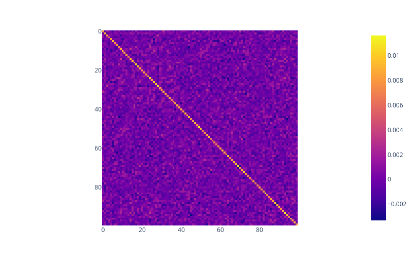
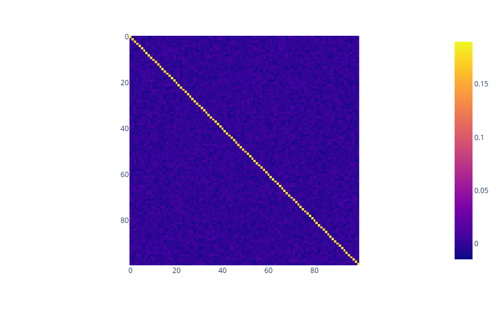
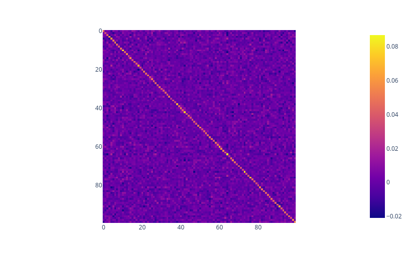
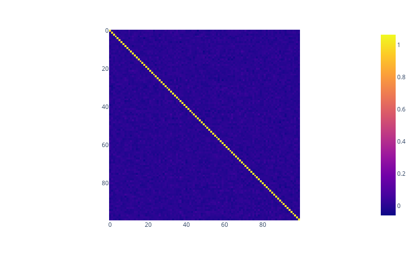
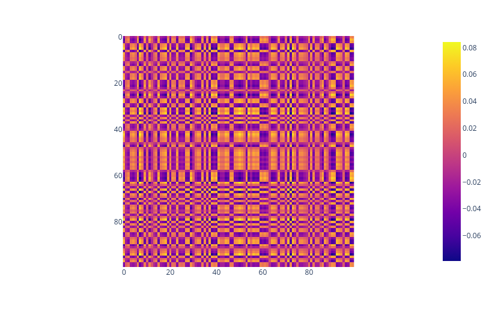
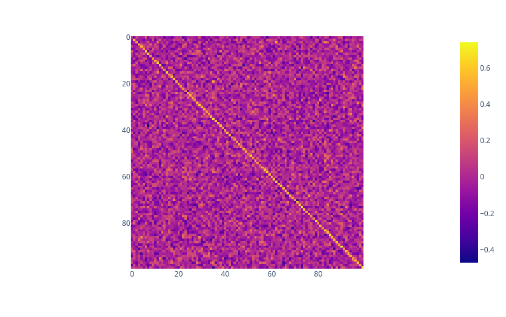

Attribution-based parameter decomposition for linear maps
TLDR: The simplicity loss currently used in APD (Braun et al., 2025) is not scale invariant. By modifying this loss so that it is, APD seems to behave better in some circumstances. Also, for numerical stability, implementations of APD should add \(\epsilon\) when computing the Schatten p-norm for \(p \in (0,1)\), because the gradient of \(x^p\) blows up near \(x = 0\).
Setup
The setup is that we have some input distribution \(x \in \mathbb{R}^{M}\) and a linear map \(W \in \mathbb{R}^{D \times M}\) , and we perform APD with respect to the output \(Wx\).
We take \(x\) to be a normalised gaussian (i.e uniform on the sphere), for simplicity. In addition, we take \(W\) to be the identity matrix. We also take \(M=D = 100\).
APD initializes \(C\) components, which are each formed as the sum of pairwise outer products of a set of \(r\) vectors \(U_i\) and \(V_i\). This outer product is used so that we can compute the simplicity loss efficiently later.
The first step of APD is to calculate gradient attribution scores for each of our \(C\) components with respect to an input \(x\).
We have \(A_c(x) = \sqrt{\frac{\sum_{o=1}^{D} (\sum_{i,j} \frac{\mathrm{d}\sum_{k=1}^{M} W_{ok}x_k}{\mathrm{d}W_{ij}}P^{C}_{ij})^{2}}{D}} = \sqrt{\frac{\sum_{o=1}^{D} \sum_{j} ( x_{j}^2{P^2_{c,oj})}}{D}} = \sqrt{\frac{\sum_{o=1}^{D} (x^2)^T P^2_{c,o:}}{D}}\)
We select the top-k components with the highest attribution scores, and then perform a second forward pass on this sparse subset of components, training for reconstruction loss, and training for low-rank active components.
Let \(K\) be the sum of the top-k components, and \(L\) be the sum of all the components. Then the reconstruction loss is \(||Wx-Kx||_2\) and the faithfulness loss is \(\sum_{i,j} (W_{ij}-L_{ij})^2\)
Simplicity loss drives for low rank, penalizing the \(l_p\)-norm (technically a quasi-norm) of the spectra of active components for \(p \in (0,1)\), making the spectra sparse (because we have a lower bound on the Frobenius norm of useful active components, so can't just drive the spectrum to \(0\)).
Behaviour of APD
In practice, faithfulness loss goes to very close to \(0\) quite quickly, and so we can restrict to just changing the hyperparameters of simplicity and minimality loss. I looked at \(\alpha \cdot{} \text{loss}_{minimality} +\text{loss}_{faithful} + \text{loss}_{simplicity}\) as the loss function for varying values of \(\alpha\).
Small \(\alpha\)
For small values of \(\alpha\), the model learns components of the form \(\frac{\text{W}}{C}\), effectively spreading out \(W\) across all \(C\) components. But this means that we only get a sparse reconstruction \(K\) of \(\frac{kW}{C}\), leading to a high minimality loss when \(k << C\).
Our simplicity loss is low even though the components we learn are not low rank. The assertion I made earlier that penalizing the \(l_p\)-norm will lead to a sparse spectrum assumed a large lower bound on the Frobenius norm of the active components, stopping us from driving the spectrum to \(0\). But we only have this when our sparse reconstruction is reasonably accurate, i.e: our minimality loss is reasonably low.
This is disappointing because it means that we get dull behaviour. As soon as the model loses minimality loss it no longer needs to worry about the simplicity loss, because it can drive the spectrum to \(0\), and it will just learn high-rank components:

A typical active component for low values of \(\alpha\)

\(K\) (the sum of the active components) for small values of \(\alpha\)
Large \(\alpha\)

A typical active component for large values of \(\alpha\)

\(K\) (the sum of the active components) for large values of \(\alpha\)
This time we get good sparse reconstruction, so low minimality loss. Our simplicity loss is high because the active components we learn are all high rank. In fact, in this case the model seems to consistently use the same active components, meaning we can just straightforwardly combine these components. So it seems like in this case APD was a success!
Modified simplicity loss
The small \(\alpha\) regime is boring because APD just learns to drive the spectrum to \(0\), meaning that it has no incentive to learn low-rank matrices. Instead, we can normalize the \(l_p\) norm by the frobenius norm (the \(l_2\) norm of the singular values), and use this for simplicity loss.
In particular, the usual simplicity loss is given by \(\sum_{i=1}^{k} ||P_{c_i}||^p_p\) where \(c_i\) are the active components. Instead we can use \(\sum_{i=1}^{k} (\frac{||P_{c_i}||^p_p}{||P_{c_i}||^{p}_2} - 1)\), which we can compute efficiently using the same trick as for the Schatten p-norm.
Note that we have \(||P_{c_i}||_2 \le ||P_{c_i}||_p\) , with equality in the rank-1 case (when all but \(1\) singular value is \(0\)), so that our loss is non-negative, and \(0\) precisely when \(P_c\) is rank-1. This modified simplicity loss is invariant under scaling any individual component, so that APD can no longer cheat by making components smaller.
Note that in practice, for a single component, this should end up being basically the same as minimizing the WSNM () loss discussed in Weighted Schatten p-Norm Minimization for Image Denoising and Background Subtraction, because when \(||X-Y||_F\) is small, we can approximate \(||X||_F\) by \(||Y||_F\), so that our modified simplified loss differs from the loss proposed there only up to multiplicative factor \(||Y||_F^p\) which we can absorb into \(\lambda\) (and a constant shift, but this is irrelevant for minimization). Though this is an informal argument, and there could be theoretical differences that I am unaware of, that make the WSNM loss superior even in the multi-component case. For instance, the modified loss is not convex, though this doesn't seem to cause problems in practice.
Numerical instability
Note that for \(p \in (0,1)\), the derivative of \(x^p\) is \(px^{p-1}\), where \(p-1 < 0\). Therefore gradients are badly behaved near 0. We can fix this just by adding \(\epsilon\) appropriately when computing the Schatten p-norm.
Modified small \(\alpha\) regime

A typical active component for low values of \(\alpha\) with modified simplicity loss

\(K\) (the sum of the active components) for small values of \(\alpha\)
All the active components are now visibly low rank, and yet they still sum to approximate a rough diagonal, though the minimality loss is high.
Conclusion
Studying APD for linear maps can help us improve our intuition for how it will behave for larger models. Here we used a spherically symmetric input, but it would be interesting to look at how APD behaves for non-homogeneous inputs.
While it seems like the modified simplicity loss seems to behave nicer for high minimality loss, I am not sure that it has the exact same theoretical behaviour as the previous simplicity loss, and I am most likely missing something. I am not suggesting replacing the simplicity loss with the modified version, just that it is interesting to see the differences that arise between the two losses.
Code to reproduce results
https://colab.research.google.com/drive/1sBPytrtZNfBMpVYeaiAgwj7Kqle7qgeg?usp=sharing